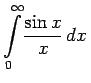
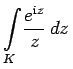
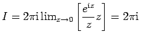
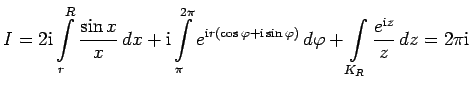
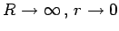
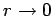
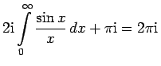
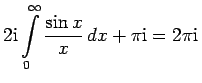
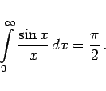

Inhalt Index DeskTop Bronstein

 Funktionentheorie Berechnung reeller Integrale durch Integration im Komplexen Anwendungen des Lemmas von Jordan Beispiele zum Lemma von Jordan
Funktionentheorie Berechnung reeller Integrale durch Integration im Komplexen Anwendungen des Lemmas von Jordan Beispiele zum Lemma von Jordan


Integralsinus nennt man das Integral . Untersucht wird in Analogie zum vorangegangenen Beispiel das komplexe Integral , mit der Kurve K gemäß der folgenden Abbildung.

Der Integrand des komplexen Integrals hat an der Stelle z=0 einen Pol 1. Ordnung, so daß
, also .
Führt man die Grenzübergänge  durch, wobei der Integrand des zweiten Integrals für  bezüglich  gleichmäßig gegen 1 konvergiert (d.h., der Grenzübergang kann unter dem Integralzeichen vollzogen werden), dann erhält man unter Beachtung des Lemma von JORDAN , also
gleichmäßig gegen 1 konvergiert (d.h., der Grenzübergang kann unter dem Integralzeichen vollzogen werden), dann erhält man unter Beachtung des Lemma von JORDAN , also
|  | (14.59) |